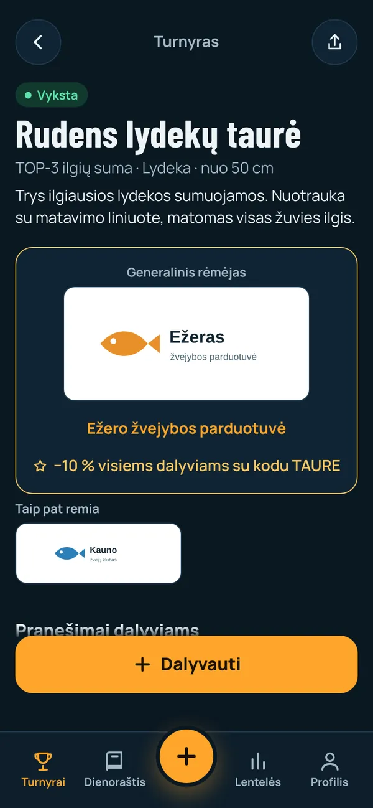
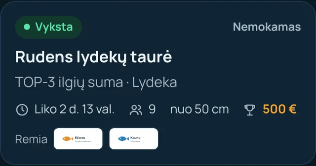
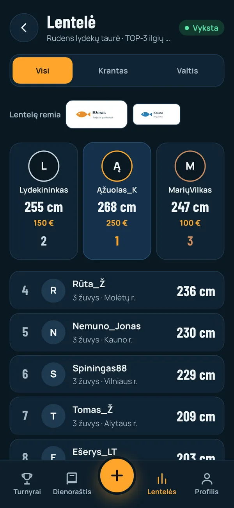
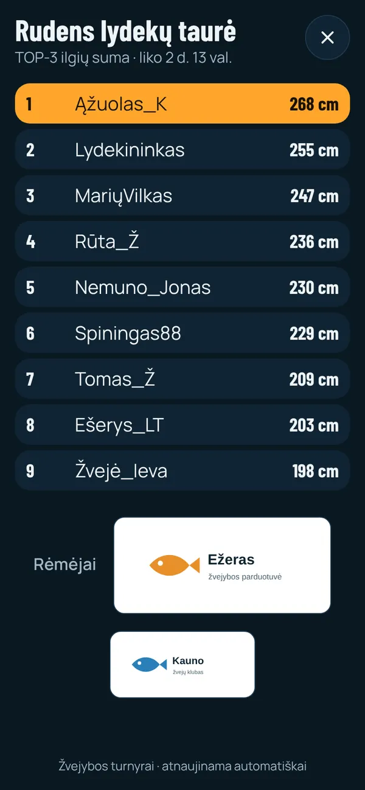
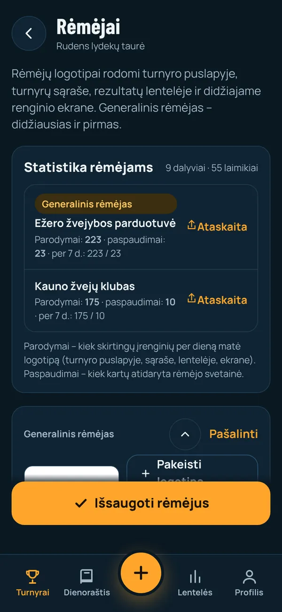

Rėmėjams: kaip jūsų vardas matomas
„Žvejybos turnyrai“ – programėlė, kurioje žvejai dalyvauja varžybose telefonu: kiekvieną laimikį fotografuoja programėlės kamera su liniuote, teisėjas patvirtina, o lentelė atsinaujina realiu laiku.
Kodėl tai veikia rėmėjui: turnyro metu dalyviai programėlę atidaro daug kartų per dieną – pažiūrėti, kas pirmauja, ir užregistruoti laimikį. Jūsų logotipas yra būtent ten, kur jie žiūri.
Po turnyro gaunate ataskaitą: kiek kartų logotipas parodytas ir kiek žmonių paspaudė jūsų nuorodą.
1. Turnyro puslapis – generalinis rėmėjas

Pačiame turnyro viršuje – didelis generalinio rėmėjo logotipas, pavadinimas ir nuoroda į jūsų svetainę.
Galima pridėti pasiūlymą dalyviams, pvz. „−10 % visiems dalyviams su kodu TAURE“ – taip rėmimas virsta tiesioginiais pirkimais.
Kiti rėmėjai rodomi logotipų tinklelyje „Taip pat remia“.
2. Turnyrų sąrašas

Rėmėjų logotipai matomi jau turnyrų sąraše – dar prieš žvejui atidarant turnyrą.
3. Rezultatų lentelė

Lentelė – dažniausiai atidaromas ekranas turnyro metu. Virš jos – „Lentelę remia“ ir jūsų logotipas.
4. Didysis ekranas renginyje

Organizatorius gali rodyti lentelę televizoriuje ar projektoriumi stovykloje, apdovanojimuose. Po lentele – rėmėjų logotipai, generalinio – didžiausias.
5. Statistika ir ataskaita rėmėjui

Organizatorius mato kiekvieno rėmėjo skaičius ir vienu mygtuku nusiunčia jums ataskaitą:
- Parodymai – kiek skirtingų įrenginių per dieną matė jūsų logotipą;
- Paspaudimai – kiek kartų atidaryta jūsų svetainė;
- turnyro dalyvių ir patvirtintų laimikių skaičius.
Rėmimo lygiai
Generalinis rėmėjas
- Didžiausias logotipas turnyro viršuje
- Pirmas lentelėje ir didžiajame ekrane
- Pasiūlymas dalyviams (nuolaida, kodas)
- Nuoroda į jūsų svetainę
- Ataskaita: parodymai ir paspaudimai
Rėmėjas
- Logotipas turnyro puslapyje, sąraše, lentelėje ir ekrane
- Trumpas pasiūlymas dalyviams
- Nuoroda į jūsų svetainę
- Ataskaita: parodymai ir paspaudimai
Rėmėjas gali prisidėti ir prie prizinio fondo – įnašas rodomas prie prizų. Pinigų programėlė neperveda: prizus įteikia organizatorius arba rėmėjai.
Ko reikia iš jūsų
- Logotipo (geriausia PNG su permatomu fonu; tiks ir JPG).
- Nuorodos į svetainę ar el. parduotuvę.
- Nebūtina: pasiūlymo dalyviams (iki 140 simbolių) ir įnašo į prizinį fondą.
Logotipą organizatorius įkelia per kelias sekundes – ir jis iškart matomas visiems dalyviams, net jei turnyras jau vyksta.
Atidaryti programėlęIliustracijose – demonstracinis turnyras su sugalvotais rėmėjais. Parodymai skaičiuojami programėlėje: vienas įrenginys – vienas parodymas rėmėjui per dieną.